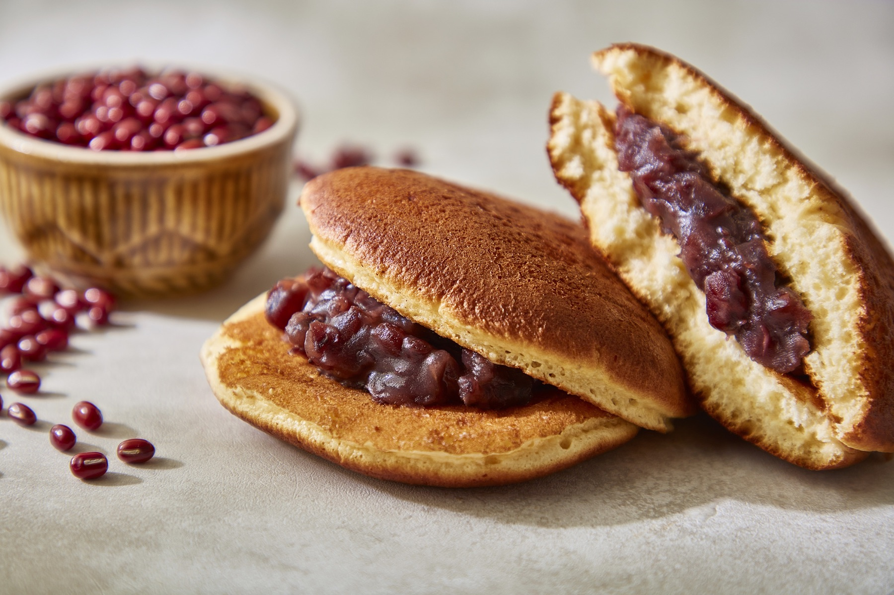
黑どら（つぶあん）
どら山の定番。北海道十勝産の小豆を甘さ控えめに炊き、隠し味に塩をきかせたつぶあんを、ふかふかの生地でたっぷり挟みました。
299圓
ご予約（新しいタブで開きます）深川不動堂と富岡八幡宮の参道、門前仲町の路地に、どら山はあります。毎朝、店頭の銅板で一枚ずつ。卵白を泡立てた、おふとんのような生地に、十勝の小豆を炊いた、塩入りのつぶあん。富岡八幡宮に奉納する、縁起の良い門仲どらやき。また食べたくなる、毎日食べたくなる。
Seasonal dorayaki of the month,media coverage and other news from the shop.
Featured on television, in magazinesand on the web.
テレビや雑誌、ウェブメディアでご紹介いただきました。
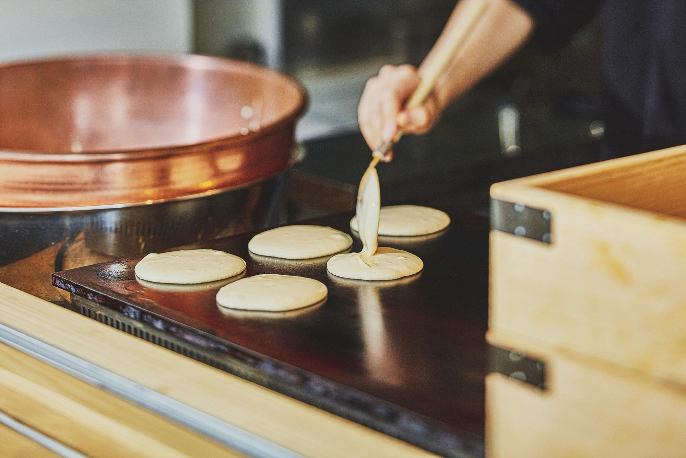
卵の白身を泡立てたメレンゲに、卵・小麦粉・砂糖を合わせたどら山の黄金比率の生地。毎朝、銅鍋で仕込み、ひとつずつ銅板へ流します。
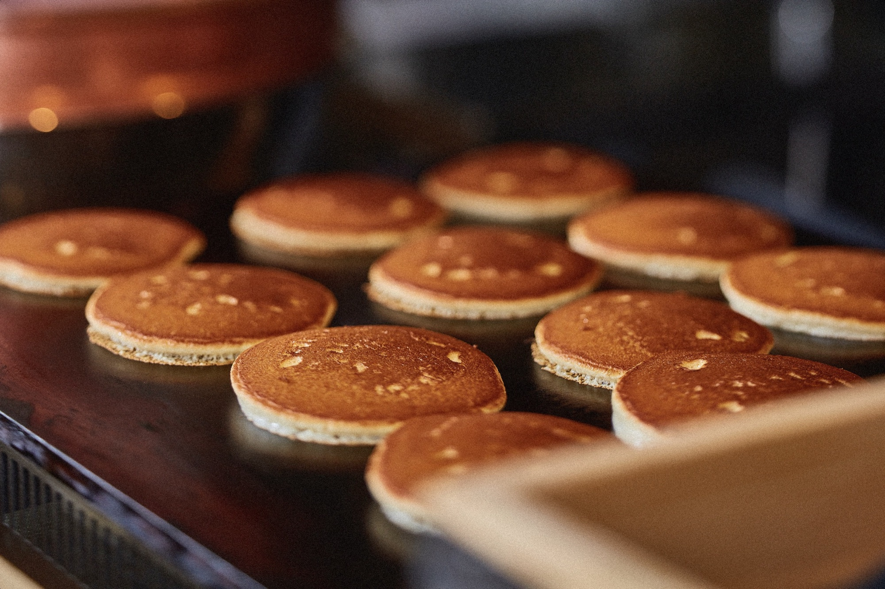
熱をむらなく伝える銅板で、一枚ずつ手で焼き上げます。焼き色と火の通りを見極め、ふかふかのおふとんのような皮に仕上げます。
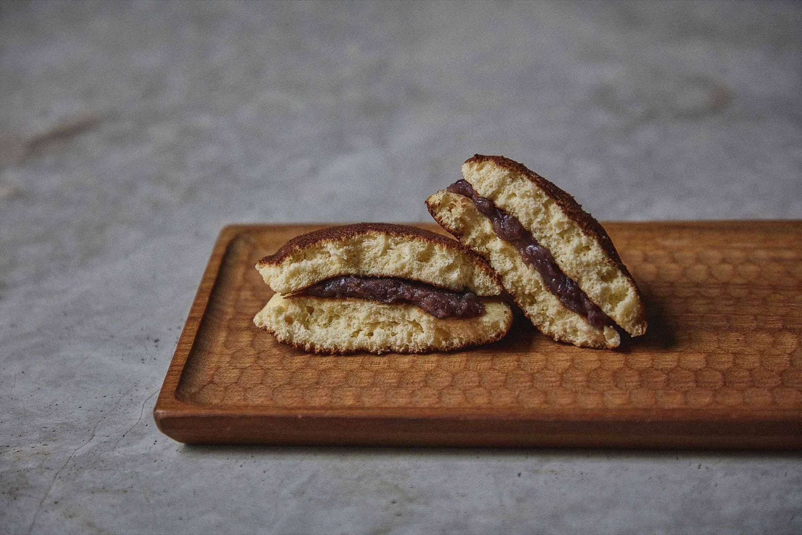
Each dorayaki is baked by hand on a copper griddle every morning,and has long been offered to Tomioka Hachimangu Shrine.
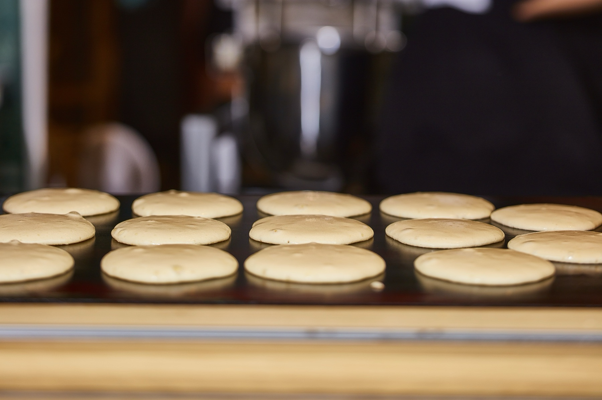
富岡八幡宮奉納、毎朝、銅板で一枚ずつ。また食べたくなる、毎日食べたくなる。
深川不動堂と富岡八幡宮を結ぶ参道の近く、門前仲町に店を構えるどらやき専門店です。富岡八幡宮に奉納している縁起の良い「門仲どらやき」を、毎朝店内で焼き上げています。ふかふかの生地と、塩をきかせたつぶあん。温めれば焼きたての香りがよみがえる、日々のおやつにも手みやげにもなるどらやきです。
卵の白身を分けて泡立て、きめ細かなメレンゲにしてから生地に合わせます。たっぷりと空気を含ませることで、スポンジケーキのようにふわりと軽い、ふかふかのおふとんのような皮に焼き上がります。
生地は毎朝、店頭の銅板で一枚ずつ手で焼いています。熱をむらなく伝える銅板で、焼き色と火の通りを見極めながら返していく。店先からは、その日の焼きたての香りが漂います。
卵・小麦粉・砂糖を同じ割合で合わせる、和菓子の伝統配合「三同割」。この基本を土台に、幾千回の試作を重ねて、どら山だけの黄金比率にたどり着きました。
北海道十勝産の小豆に白双糖を合わせ、甘さを控えめに炊き上げます。隠し味に塩をきかせ、粒の食感を残すのがどら山のつぶあん。ふんわりした生地との対比を楽しめます。
北海道十勝産小豆、純国産本みりん、香川県産うどん粉、国産こめ油、北海道産てんさい糖。毎日食べても飽きのこない味を目指し、素材は国産のものを選んでいます。
Skins baked fresh every morning,with classic and seasonal fillings.
毎朝焼き上げる皮に、定番のつぶあんと白あん、季節ごとの味を挟んでいます。店頭ではその日に焼いたどらやきを、ご予約はテイクイーツで翌日以降のお受け取り分を5個から承ります。

どら山の定番。北海道十勝産の小豆を甘さ控えめに炊き、隠し味に塩をきかせたつぶあんを、ふかふかの生地でたっぷり挟みました。
299圓
ご予約（新しいタブで開きます）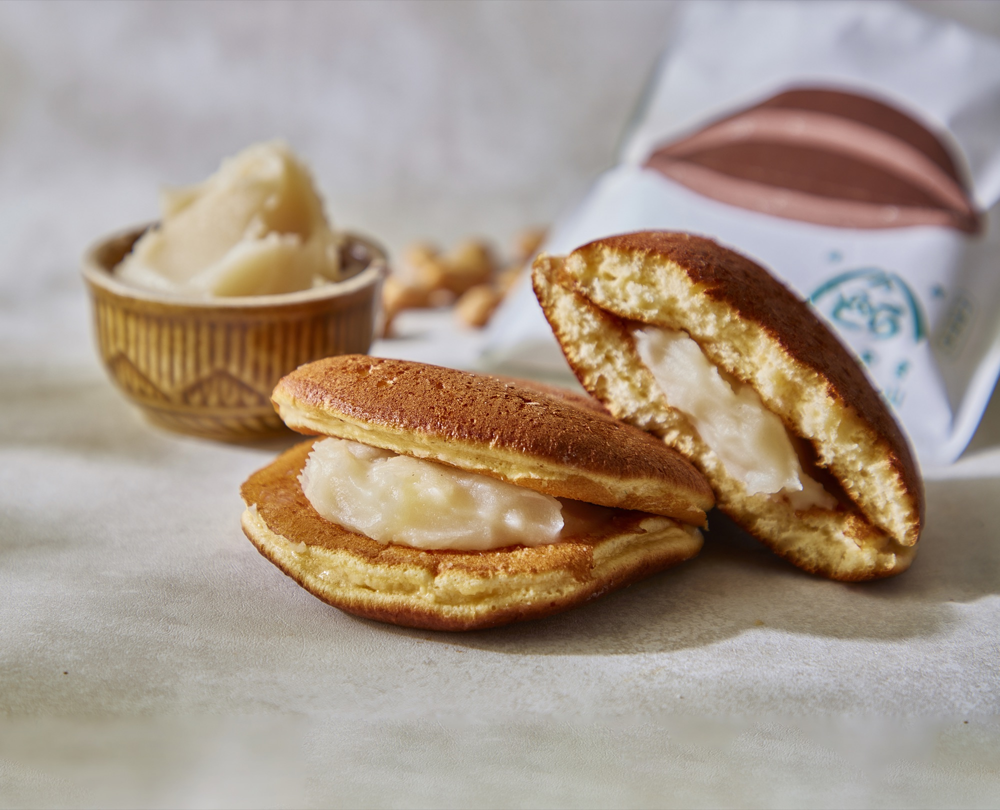
白いんげん豆の白あんを挟んだ、やさしい甘さのどらやき。つぶあんとはまた違う、なめらかな口あたりを楽しめます。
320圓
ご予約（新しいタブで開きます）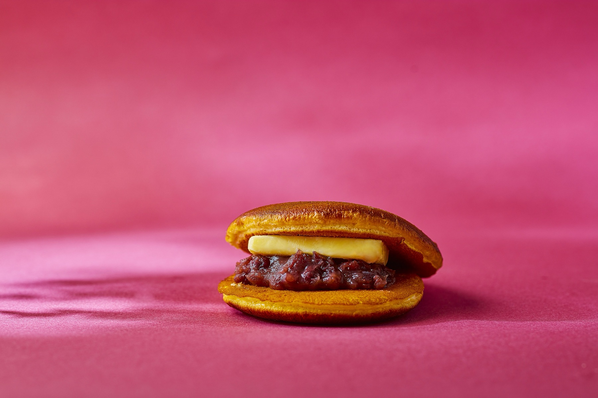
塩入りのつぶあんに、十勝産生乳のバターを合わせました。あんの甘さとバターのコクが重なる、ひと口目から満足感のある一品です。
420圓
ご予約（新しいタブで開きます）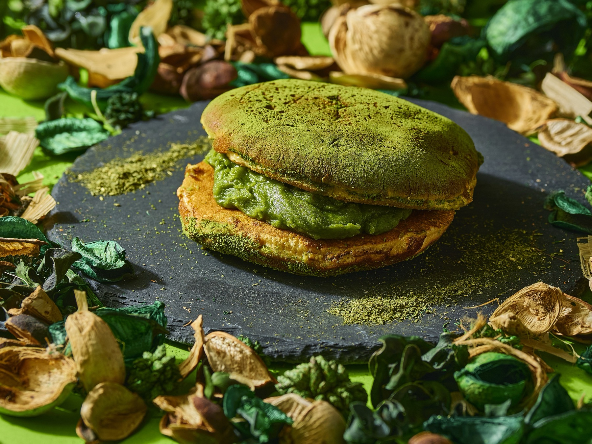
抹茶をたっぷり使った、鮮やかな緑のどらやき。抹茶好きの方にこそ味わっていただきたい、香りの立つひと品です。
450圓
ご予約（新しいタブで開きます）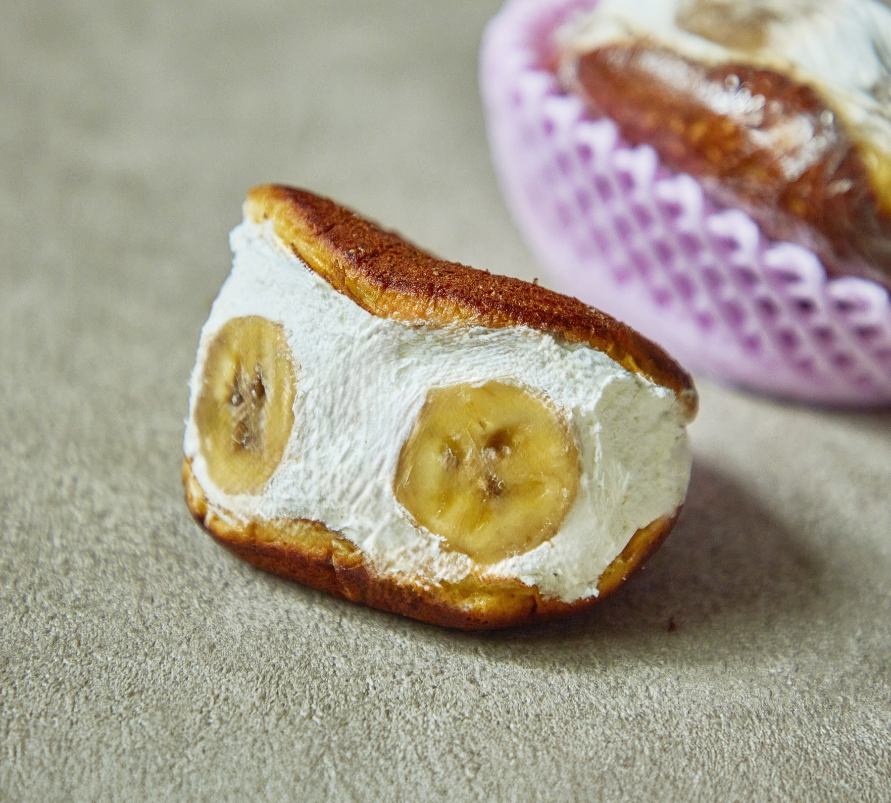
季節のフルーツとクリームを、ふかふかの生地で包みました。中身は時季によって入れ替わります。
480圓
ご予約（新しいタブで開きます）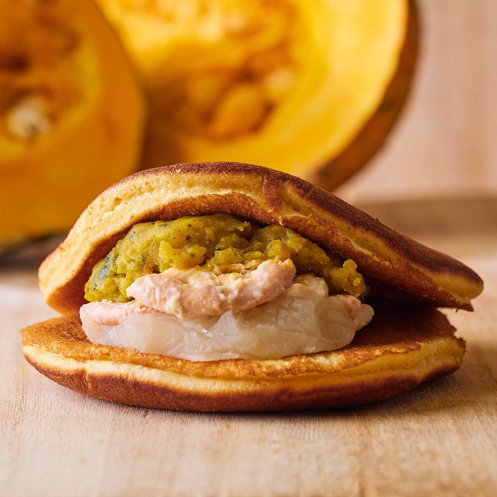
毎月入れ替わる、季節のどらやき。10月は「幻の栗マロンかぼちゃどら」です。月ごとの味はお知らせとInstagramでご案内します。
450〜圓
ご予約（新しいタブで開きます）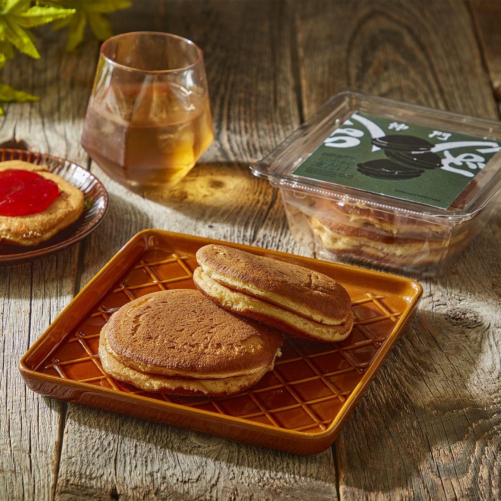
ふかふかの生地だけを4枚にした、どら山ならではのセット。あんこが苦手な方も、お好みのトッピングでオリジナルのどらやきをお楽しみいただけます。
430圓
ご予約（新しいタブで開きます）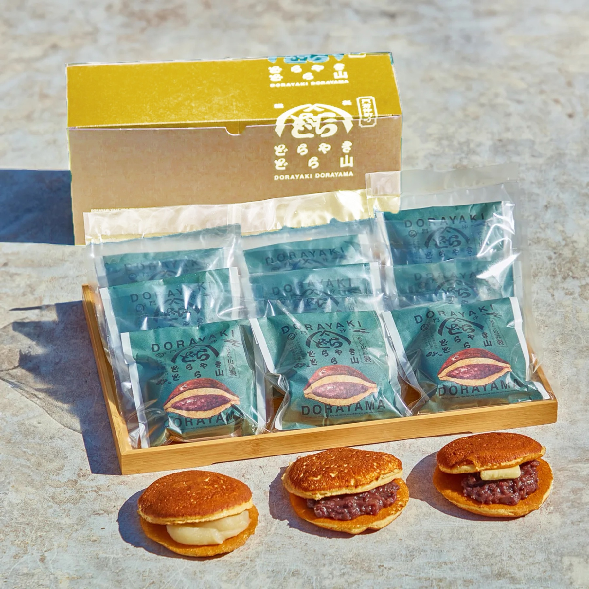
ひとつずつ個包装にし、箱と紙袋に入れてお渡しします。個包装なので、職場や集まりでの配り分けにも便利です。ご挨拶や手みやげにどうぞ。
価格はすべて税込です。
On the approach to Fukagawa Fudodo and Tomioka Hachimangu,the batter is baked fresh in the shop every morning.
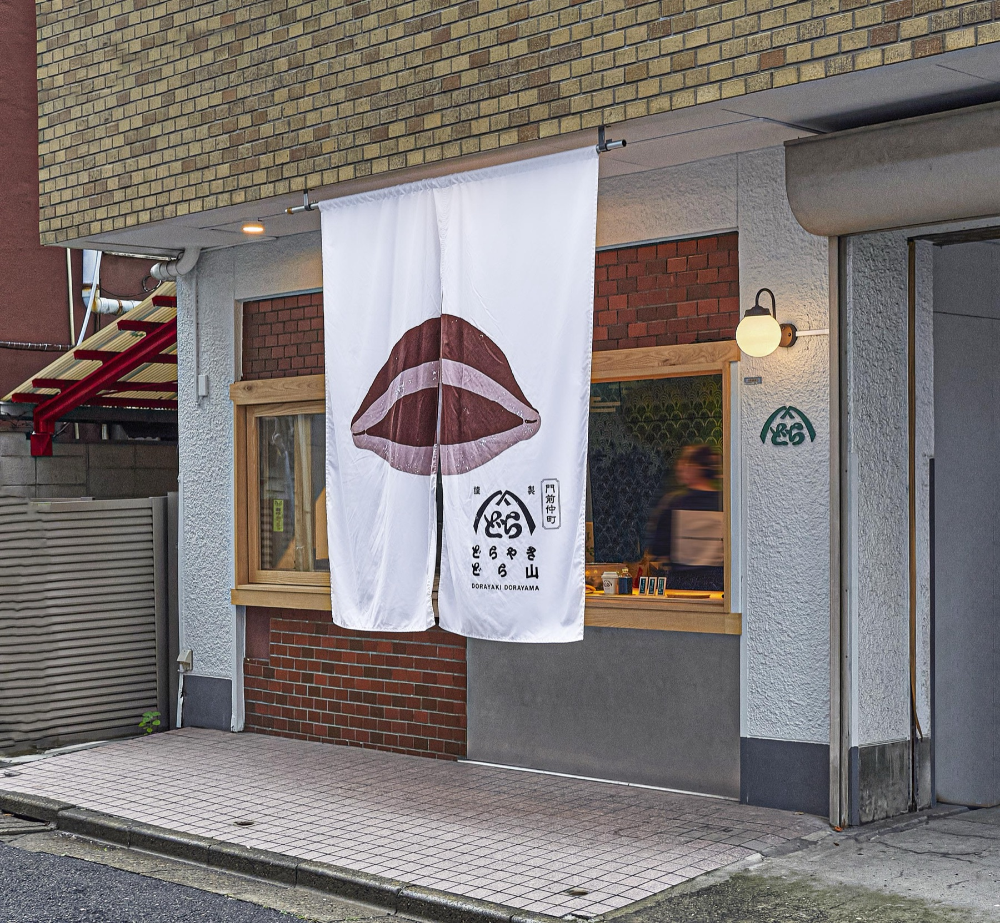
深川不動堂と富岡八幡宮の参道。毎朝、店内で生地を焼いています。
2022年6月、門前仲町に開いた總本鋪。東京メトロ東西線「門前仲町駅」から徒歩1分、三菱UFJ銀行ビルの裏の路地に、白い暖簾が目印の小さな店を構えています。窓越しに銅板で焼く様子が見え、店先には焼きたての香り。参拝の帰りや、ちょっとした手みやげに立ち寄っていただける店でありたいと思っています。
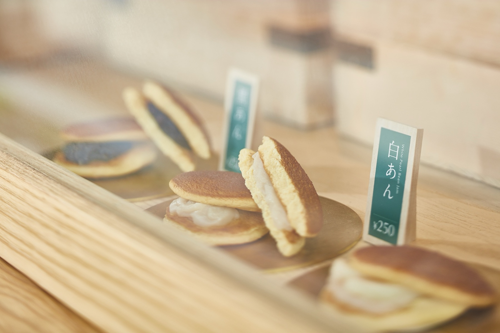
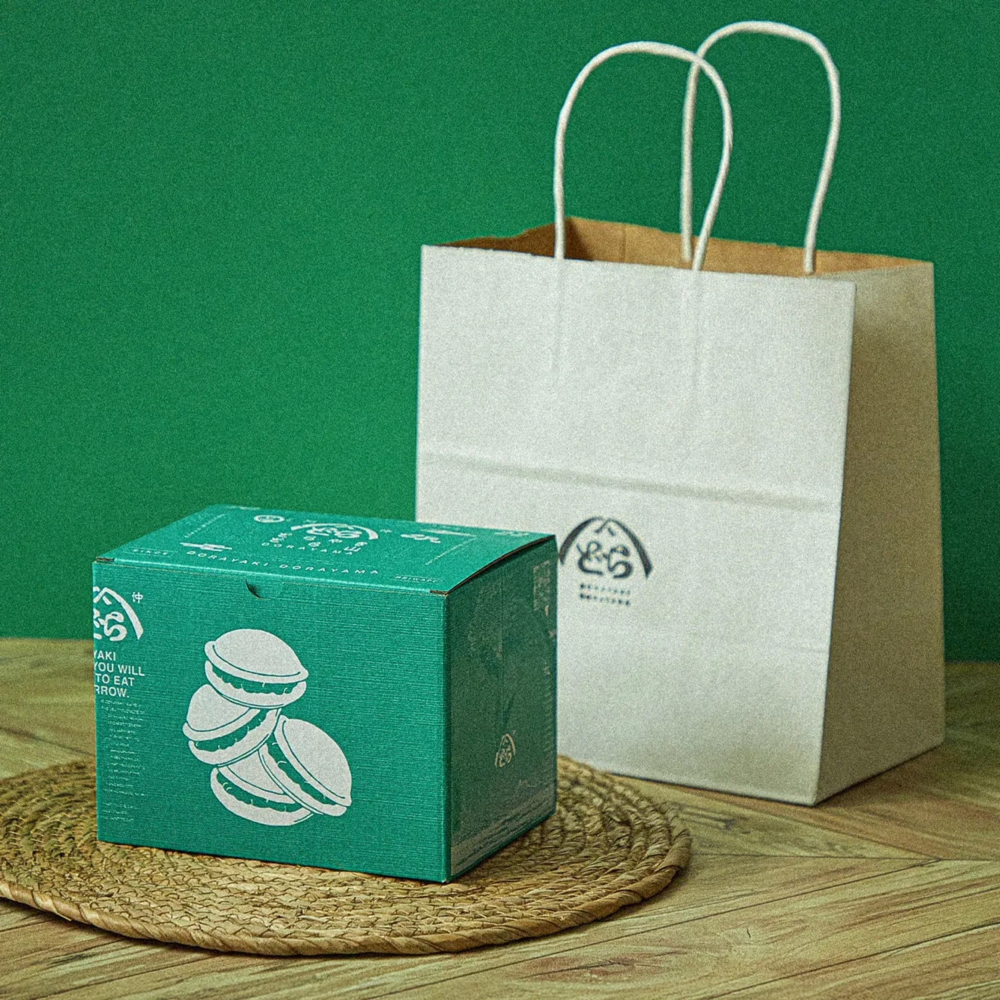
A one-minute walk from Monzen-nakacho Station,open every day from 10:00 until sold out.
毎日10時から16時まで、年中無休で営業しています。毎朝焼いた分がなくなり次第終了となりますので、確実にお求めになりたい方はご予約が便利です。ご予約はテイクイーツから、翌日以降のお受け取り分を5個から、30日先まで承ります（お受け取りは10:30〜15:45）。お支払いはオンライン決済のほか店頭でも可能で、店頭ではクレジットカードと交通系ICがご利用いただけます。